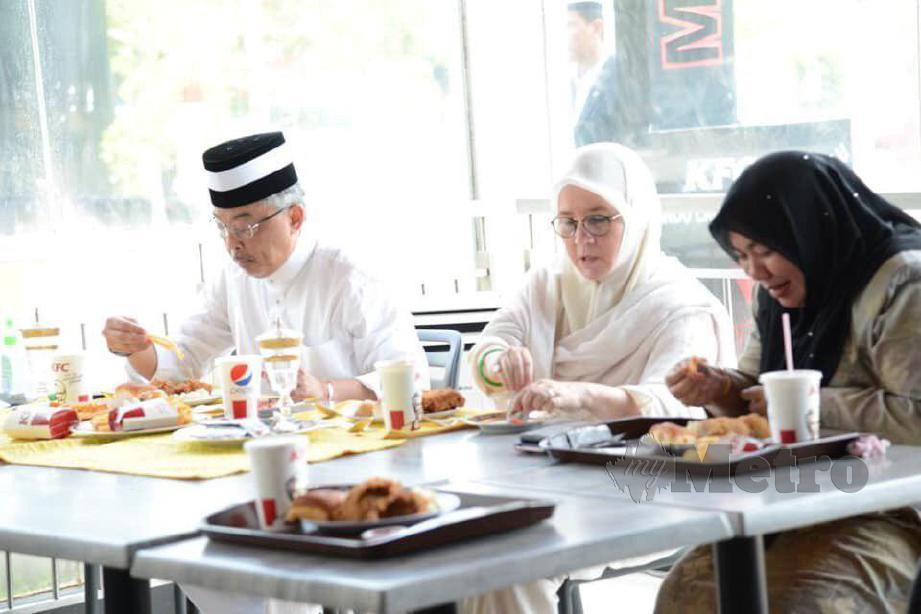

Fried chicken is our pride and joy and it's our job to ensure every aspect of our chicken from farm to fingers. It is carefully considered with quality and sustainability in mind.
Because we work with fresh ingredient daily. Then,food safety is our number one priority.Subsequently,starting with a culture of food safety that resonates from the top down and includes regular audits of our suppliers, distributors and restaurants.
After that,we're constantly innovating and finding distinct ways to make delicious fried chicken that's wrapped in goodness and provides choice from the ingredients we use to the wholesome sides that complete a meal.
We make our food the way the Colonel did with real cooks, using freshly-prepared good food and unrelenting quality control. Futhermore,we’re committed to transparency, telling the stories of our finger lickin’ good food and labeling it responsibly.
We believe in food rescue and to date have donated over 80 million pounds of food through our global Harvest program.

PEOPLE
The Colonel achieved a lot in his life by following one simple rule which is the quotes that are very meaningful which is "Do all you can and do it the best you can.After that," We live out our heart led culture and believe in providing opportunity to people both inside and outside of our organization. Everyone should have an opportunity to find their secret recipe.
We’re committed to helping all people become their best. This means providing opportunities to employees of all levels around the world to grow professionally, personally and academically.
We believe in supporting our local communities around the world through our KFC Foundations, Add Hope programs, global volunteerism efforts and our Harvest initiative.
Internally, KFC encourages a heart-led culture through leadership programs like Heartstyles. We also believe in creating a fully inclusive work environment, cultivating a workplace where diversity of thought and perspective is welcomed, sought out and developed.
PLANET
Next,KFC has over 24,000 restaurants in 145 countries and territories. So that, we’re opening new restaurants every day.In fact, a new KFC opens every six hours somewhere in the world and with 2/3 of the world’s KFCs yet to be built.We’re as committed to our planet as we are to our food, our employees and our customers.
After that,KFC is committed to improving our sustainable footprint through green building initiatives like energy and water efficiency, packaging, food recovery and waste reduction and recycling.
We have a history of sustainable packaging innovation which is from boxes, to barrels to our world famous bucket and also we are constantly innovating those solutions to be more sustainable, keeping in mind both the customer and employee experiences, as well as our impact on the environment. This includes our 2025 commitment to make all customer facing plastic packaging recoverable or reusable and our 2020 commitment to source all fiber based packaging from certified or recycled sources. KFC is also proud to be a supporting partner of NextGen Consortium.
Yum! Brands Inc parent company of KFC is committed to the humane treatment of animals and responsible farming.